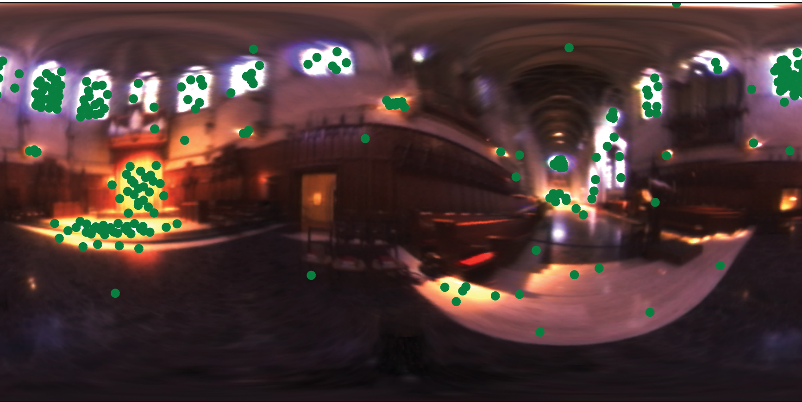
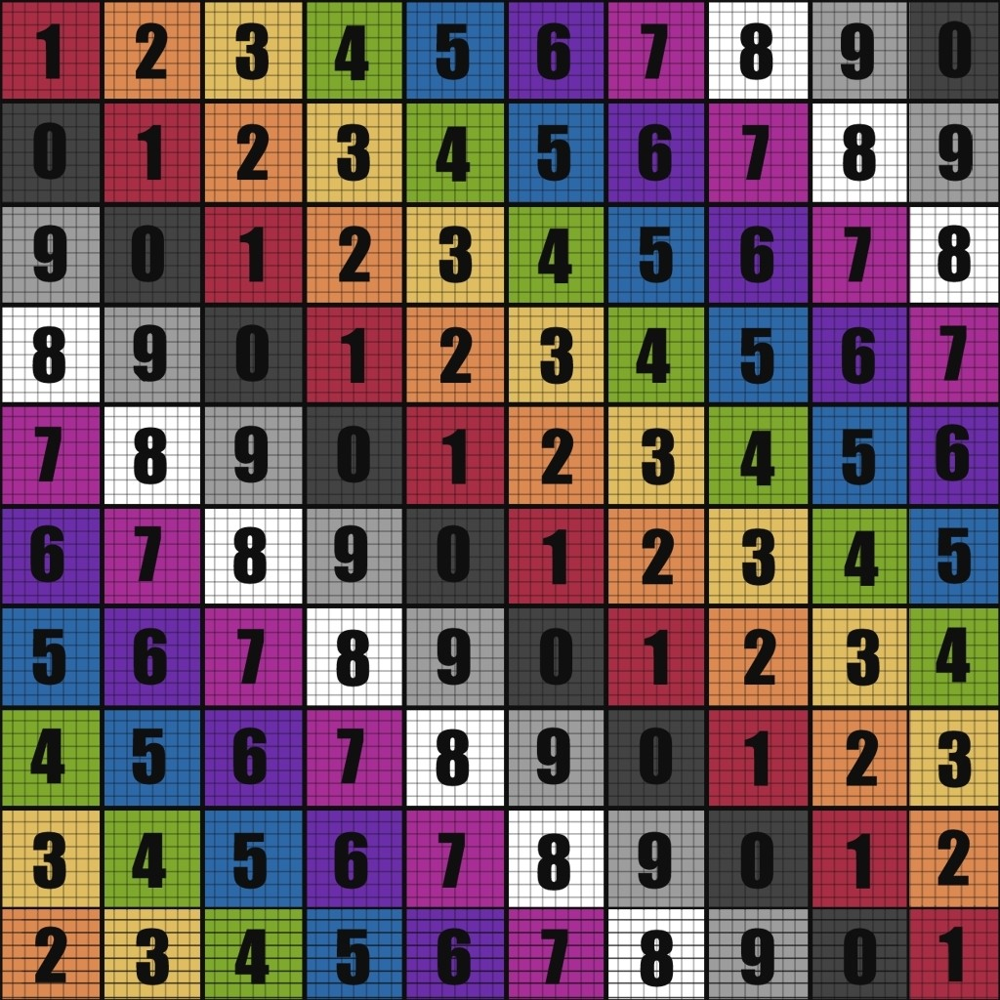

**Project Proposal**
Student Name/-s: Wu Zhanyi(22-737-266)
# Motivational Image
The top two images are motivational visuals inspired by an animation. They transition from a winter scene to a spring scene.
To align with this year's theme, I combined the two images. The left side depicts a winter scene, while the right shows a spring scene, with two characters standing between these two environments. This composition aims to emphasize the emotional connection between these characters.
# Selected Features
ID | Short Name |Points | Features (if required) & Comments
--------|---------------------------|-------|------------------------------------
15.3 | Environment Map Emitter | 15 |
30.1 | Heterogeneous Participating Media | 15 | grading as a 15 point feature
30.2.1 | Subsurface Scattering | 30 | diffusion dipole
Total || 60 |
Other features might be used but not for grading
ID | Short Name |Points | Features (if required) & Comments
--------|---------------------------|-------|------------------------------------
5.3 | Images as Textures | 5 |
5.20 | Modeling Meshes | 5 |
Total || 10 |
# Feature explaination and validation
## **Environment Map Emitter**
Environment Map Emitter will be used for background.
To validate this, I will:
1. Perform importance sampling tests by sampling points from test images and ensuring that sampling probabilities are proportional to pixel luminance, as demonstrated in lectures.
2. Build a scene with three spheres (mirror, dielectric, and diffuse) and render with a high-resolution EXR image. Results will be compared with Mitsuba.

## **Heterogeneous Participating Media**
Heterogeneous Participating Media will be used for water and clouds.
To validate this, I will:
1. Create two sets of scenes: one for homogeneous media and one for heterogeneous media. Each set will include variations in parameters such as scattering, absorption, albedo, and extinction coefficients. Compare results with Mitsuba.
2. Build a scene incorporating both homogeneous and heterogeneous media, and compare results with Mitsuba.
## **Subsurface Scattering**
Subsurface Scattering will be used for leaves and skin.
To validate this, I will:
1. Build a scene with skull in front of a point light. Subsurface scattering behavior will be tested by enabling and disabling the BSSRDF, allowing for direct observation of its impact on light diffusion through the material.
2. Adjust key parameters such as absorption coefficient, scattering coefficient, and phase function parameter to test various subsurface scattering effects. The results will be compared with Mitsuba.
## **Images as Textures**
Images as Textures will be used to render tree bark, leaves etc.
To validate this, I will:
1. Create a scene with a single sphere(with checkerboard texture) and compare the result with Mitsuba. If the texture appears similar, this feature will be considered valid.

## **Modeling Meshes**
Modeling Meshes will be used to build my scene and objects. Once the scene and objects are built and can be imported into nori, it can be considered valid without additional tests.
## **Final validation**
After validating each feature, I will render the scene shown in the motivational image and highlight how each feature contributes to specific parts of the scene.
# Feedback
**Use this section to provide feedback on the feature selection process, especially the feature selection tool if you used it.**
...
# Supplementary
* This report template uses [Markdeep](https://casual-effects.com/markdeep/), which supports Markdown syntax in HTML file. For example usage, please refer to the [official demo document](https://casual-effects.com/markdeep/features.md.html).
* LaTeX is also supported for typing mathematical formulas:
$$
L_o(\mathbf{x}, \omega_o) = \int_{\Omega} L_i(\mathbf{x},\omega_i)\, f(\mathbf{x}, \omega_i, \omega_o)\, |\cos\theta_i|\, \mathrm{d}\omega_i
$$

 # Selected Features
ID | Short Name |Points | Features (if required) & Comments
--------|---------------------------|-------|------------------------------------
15.3 | Environment Map Emitter | 15 |
30.1 | Heterogeneous Participating Media | 15 | grading as a 15 point feature
30.2.1 | Subsurface Scattering | 30 | diffusion dipole
Total || 60 |
Other features might be used but not for grading
# Selected Features
ID | Short Name |Points | Features (if required) & Comments
--------|---------------------------|-------|------------------------------------
15.3 | Environment Map Emitter | 15 |
30.1 | Heterogeneous Participating Media | 15 | grading as a 15 point feature
30.2.1 | Subsurface Scattering | 30 | diffusion dipole
Total || 60 |
Other features might be used but not for grading